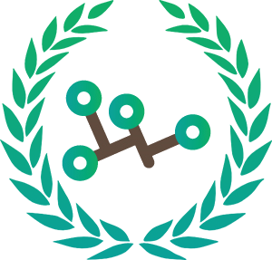

여러분이 가꾸어 나가는
지식의 나무
나무위키에 오신 것을 환엽합니다!
나무위키는 누구나 기여할 수 있는 위키입니다.
검증되지 않았거나 편향된 내용이 있을 수 있습니다.
|  |
이용 안내
|
 |
게시판
|
 |
저작권 문의 |
 |
임시조치 문의 |
| 나무위키 프로젝트 | |
|  | 프로젝트에 참여해서 관련 문서에 기여의 손길을 보내주세요! |
| 최근 신설된 프로젝트: 나무위키 Cheetah Mobile 프로젝트, 나무위키 Ketchapp 프로젝트, 나무위키 누락문서 프로젝트 | |
| 분류:토막글 · 이런 글이 필요하다 · 작성이 필요한 문서 · 내용이 짧은 문서 · 문류:나무위키 프로젝트 | |